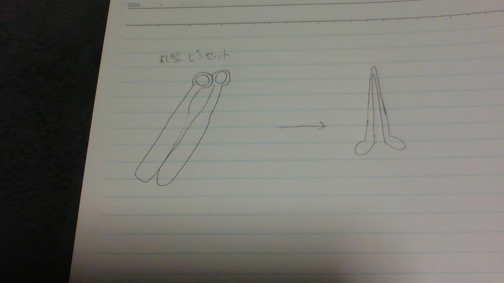
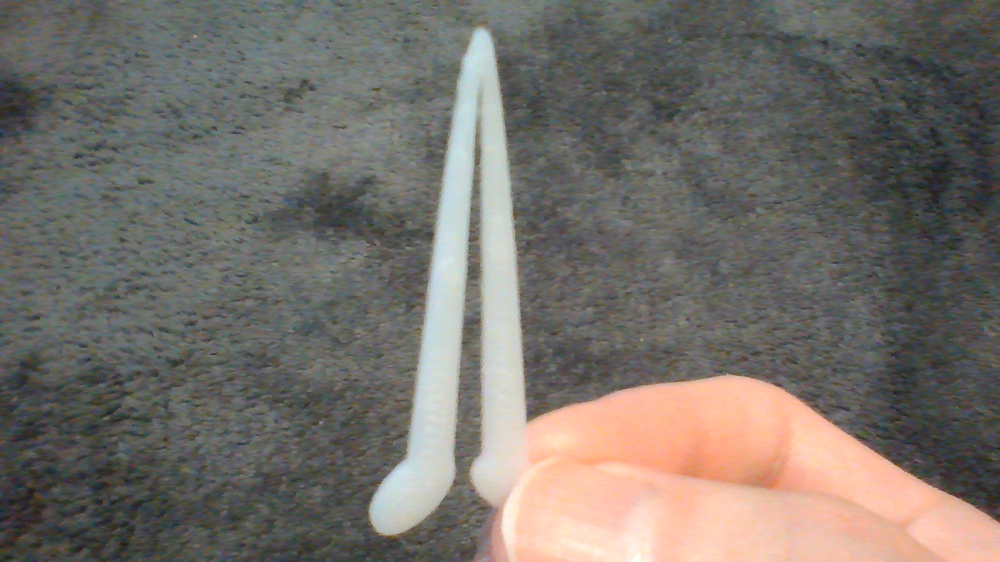

１.作品のタイトル
第1回の課題はピンセットを進化させると言うことで私は目を開けやすくするピンセットを作りました。
どういうことなのかこれから説明していきたいと思います。
２.構想段階

３.実際の作品

４.設計ファイル
目を開けやすくするピンセット
５.作品の説明
目を開けやすくするピンセット
大きさは長さ42mm×幅1.3mm×高さ15mm
６.なぜこの作品を作るに至ったか
当初は先端を丸型にしたらつかめるものも増えて先端の形状が変わって安全だなという浅はかな考えでした。
私は最近眼鏡からコンタクトに乗り換えました。このことから何か関連してピンセットにできないかと考え始めました。
あるとき、一つ問題が生じました。
それは１限から授業があるとき起きた後すぐにコンタクトを入れようとすると目が開きづらいということです。
この問題を解決するために、ピンセットを押すのではなく開くようなデザインにして先端を目の形に合わせることで目を無理やり開けてもらうことで素早くコンタクトを入れることができるというものを作ったら悩みを解決してくれると思い、作ってみようと思いました。
制作する上で参考にしたリンク
複数のコンポーネントを組み合わせて１つのコンポーネントにする
Autodesk公式の質問への解答サポート